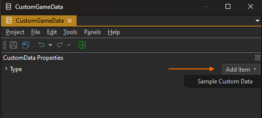
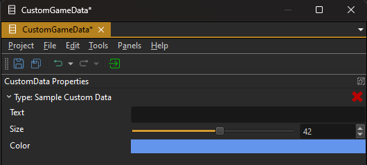

Custom Data
By writing custom components with C++ you can define typed configuration properties that show up in the editor UI. These can also use type attributes to limit the valid input range or change how the value is displayed and editable. When you use such components inside prefabs, this enables you to configure an object once, but have many instances of it at runtime.
However, there are two downsides to this approach:
- Although you only configure a prefab once, each prefab instance still creates a copy of that data when it is spawned from the prefab template. Thus there is per-instance memory overhead for data that could be fully shared across all instances.
- You may want to share the same setup across a large variety of prefab types. For example you may only have a few different creatures in your game, but lots of visual variations of them, and you want to edit their behavior properties in a single place and share it across many prefabs, rather than having to go through all of them and manually making sure that they all have the same configuration.
The Custom Data feature enables you to solve both of these issues.
An alternative to custom data is the config file resource, though it has no editor integration.
Creating Custom Data Types
Custom data types are fully defined in C++ code.
To create a new custom data type, derive from the ezCustomData base class and add reflection capabilities. Then add all the properties that you need. Additionally we need to declare a dedicated resource for your data type.
The code snippet below shows what should be added to a header file (.h):
class SampleCustomData : public ezCustomData
{
EZ_ADD_DYNAMIC_REFLECTION(SampleCustomData, ezCustomData);
public:
ezString m_sText;
ezInt32 m_iSize = 42;
ezColor m_Color;
};
EZ_DECLARE_CUSTOM_DATA_RESOURCE(SampleCustomData);
Now in a corresponding source file (.cpp) add the reflection block that enables the engine to know about the properties. Additionally we use a macro to finish the definition of our resource type.
// clang-format off
EZ_BEGIN_DYNAMIC_REFLECTED_TYPE(SampleCustomData, 1, ezRTTIDefaultAllocator<SampleCustomData>)
{
EZ_BEGIN_PROPERTIES
{
EZ_MEMBER_PROPERTY("Text", m_sText),
EZ_MEMBER_PROPERTY("Size", m_iSize)->AddAttributes(new ezDefaultValueAttribute(42), new ezClampValueAttribute(16, 64)),
EZ_MEMBER_PROPERTY("Color", m_Color)->AddAttributes(new ezDefaultValueAttribute(ezColor::CornflowerBlue)),
}
EZ_END_PROPERTIES;
}
EZ_END_DYNAMIC_REFLECTED_TYPE;
// clang-format on
EZ_DEFINE_CUSTOM_DATA_RESOURCE(SampleCustomData);
This is all that needs to be done to add a new custom data type and have it show up in the editor.
Using Custom Data Types in the Editor
In the editor create a Custom Data asset from the asset browser.
Inside the asset, your new custom data type should show up in the menu:

If it doesn't show up here, make sure your code is properly compiled, your plugin is referenced and loaded without errors by the editor.
When you add your custom data type, the editor displays all the properties that you configured on it:

If a property doesn't show up, at all, make sure it is added to the reflection block in the source file. If it should show a different default value, limit the value to a certain range or show a different UI, you can add attributes to the reflected properties. For details look at the reflection system documentation and have a look at what other components do.
Using Custom Data Types in C++ Code
To make use of your custom data type in a C++ components you first need to make it possible to reference your custom data asset in that component, so that you can select on your component which asset it should use.
To do so, add the corresponding resource handle as a member to your component:
SampleCustomDataResourceHandle m_hCustomData;
Then, in the source file of your component, add the property to the component's reflection block:
EZ_RESOURCE_MEMBER_PROPERTY("CustomData", m_hCustomData)->AddAttributes(new ezAssetBrowserAttribute("CompatibleAsset_CustomData", "SampleCustomData")),
Make sure to add the necessary asset browser attribute, otherwise it only shows up as an ordinary string property.
Note:
Using a reflected resource handle isn't strictly necessary, you can also get a custom data resource directly in code by using the asset GUID to load the resource manually. It is just more convenient and enables you to select the desired resource in the editor.
Now when you look at the properties of your component in the editor, it should show a field that allows you to select custom data assets.
Important:
Note the second string passed to
ezAssetBrowserAttribute. It tells the system to only show custom data assets that containSampleCustomDataobjects (or derived ones). This is an additional filter, that makes it more convenient to pick matching assets in the editor. If you leave this out, the asset browser doesn't show any custom data asset. If you want to be able to select all types of custom data, pass a*here.
Finally, to actually access your custom data inside your game code, you have to get a resource lock using your resource handle:
ezResourceLock<SampleCustomDataResource> pCustomDataResource(m_hCustomData, ezResourceAcquireMode::AllowLoadingFallback_NeverFail);
if (pCustomDataResource.GetAcquireResult() == ezResourceAcquireResult::Final)
{
const SampleCustomData* pCustomData = pCustomDataResource->GetData();
ezDebugRenderer::Draw3DText(GetWorld(), ezFmt(pCustomData->m_sText), GetOwner()->GetGlobalPosition(), pCustomData->m_Color, pCustomData->m_iSize);
}
As you can see in the snippet above, once you have a resource lock you can access your custom data type like a regular C++ class. Make sure not to hold direct pointers to the data struct, but always go through the resource lock and keep the resource handle around for the entire duration that you potentially want to access the resource, as it determines the resource's lifetime.
For more details about how to use resources, see the resource management chapter.